Riqueza nutricional
No hay nutrientes únicos en plantas que no podamos obtener de animales.
Una guía visual basada en la presentación de Jade Soller
Capítulo 01
Estrategia alimentaria que se basa en el consumo de alimentos de origen animal.
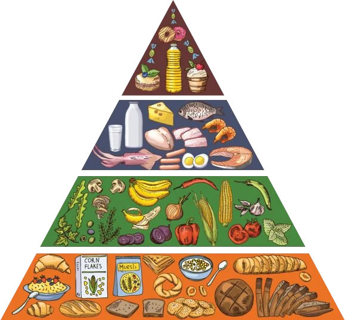
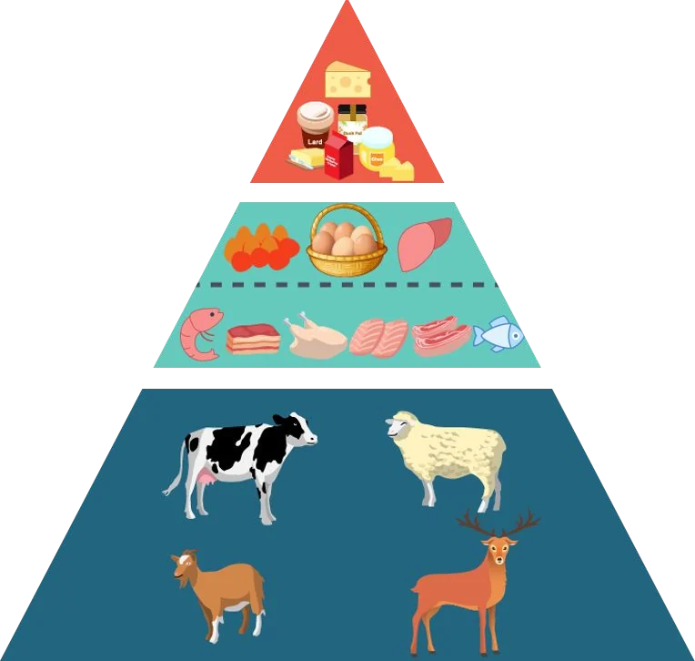
Ejemplos de platos
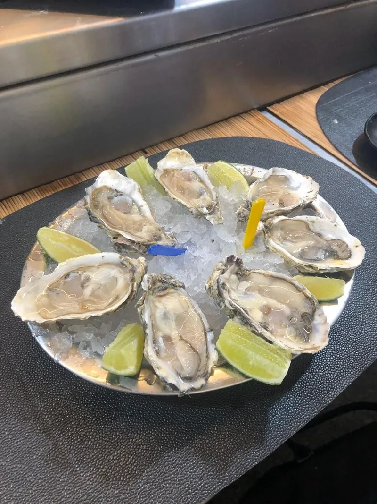
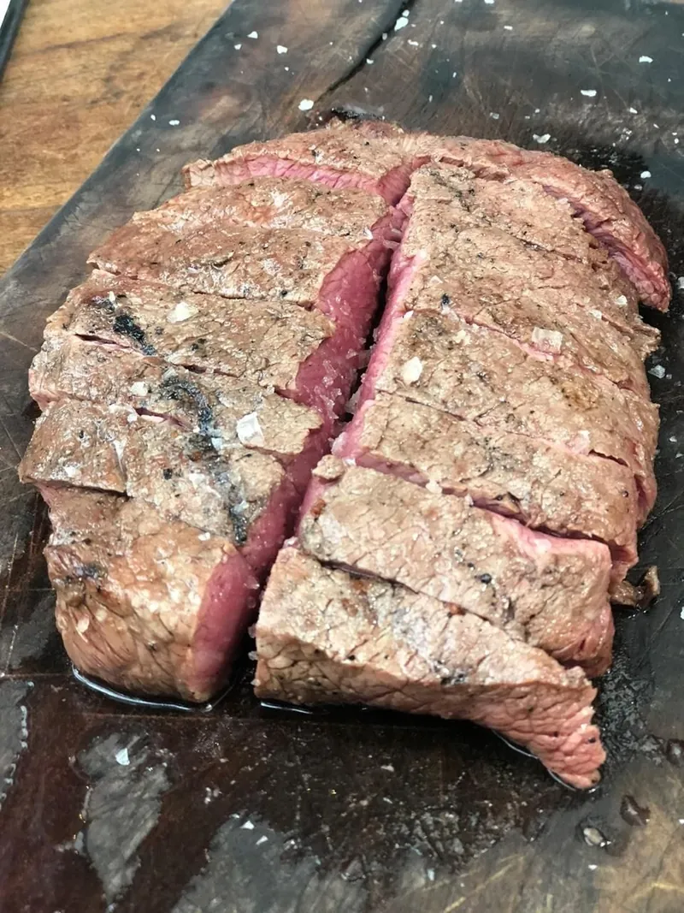
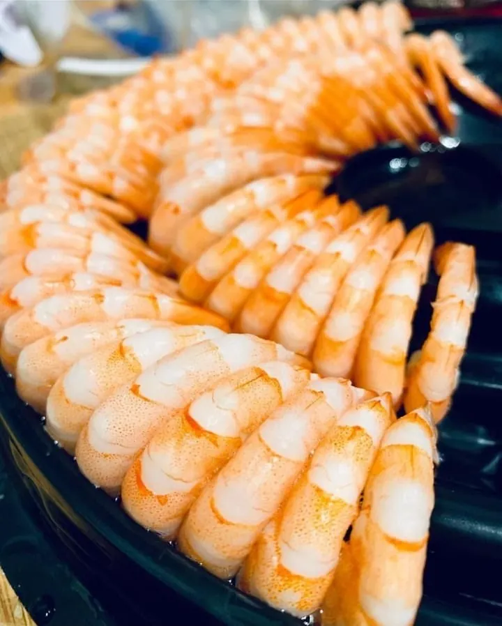
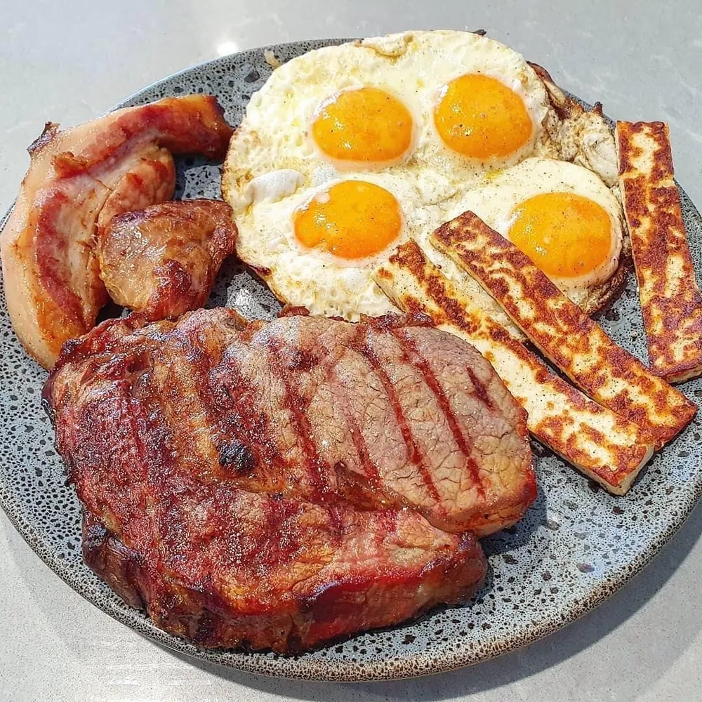
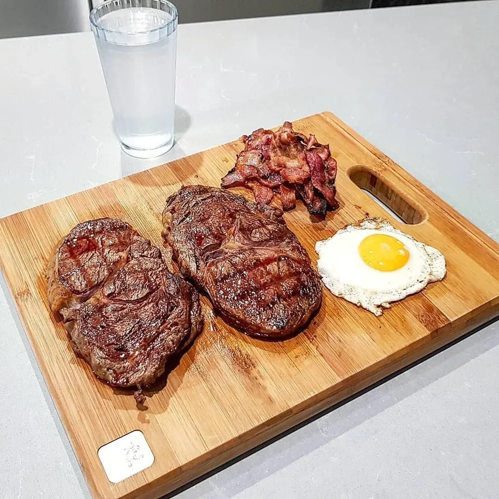
No hay nutrientes únicos en plantas que no podamos obtener de animales.
La carne es muy biodisponible: el cuerpo la descompone y absorbe sus nutrientes fácilmente.
Los antinutrientes interfieren en la absorción de nutrientes y minerales beneficiosos.
Densidad nutricional
Porcentaje de la ingesta diaria recomendada que cubren 100 g de cada alimento. Fíjate en el hierro, el zinc, el cobre y el yodo.
| Vegetal | Productos animales | |||
|---|---|---|---|---|
| Nutriente | Espinaca | Hígado de res | Carne de res | Huevas de salmón |
| Vitamina A (retinol) | carotenoides | 2200% | 2% | 13% |
| Vitamina B9 (folato) | 20% | 60% | 1% | 3% |
| Vitamina B12 | 0% | 2000% | 164% | 600% |
| Vitamina C | 52% | 22% | 0% | 18% |
| Vitamina D* | D2 | 2% D3 | 2% | 10% |
| Vitamina E | 11% | 2% | 4% | 83% |
| Vitamina K2 | 0% | 127% | 19% | 0% |
| Hierro | 32,8% no hemo | 63% hemo | 16% | 5% |
| Zinc | 7% | 47% | 47% | 12% |
| Cobre | 10% | 466% | 6% | 24% |
| Yodo | 6% | 2% | 0% | 65% |
| Omega-3 EPA | 0 mg | 10 mg | 12 mg | 1240 mg |
| Omega-3 DHA | 0 mg | 84 mg | 0 mg | 1762 mg |
Curada de enfermedades diversas
…y algunas otras.
21años de carnívora
46años de edad
Curada de enfermedades autoinmunes
Artritis reumatoide juvenil a los 7 años, lo que llevó a la necesidad de un reemplazo de cadera y tobillo en la adolescencia.
Tomó varios medicamentos y sufría graves problemas de piel como eczema, erupciones cutáneas, picazón, acné severo, además de depresión y fatiga crónica.
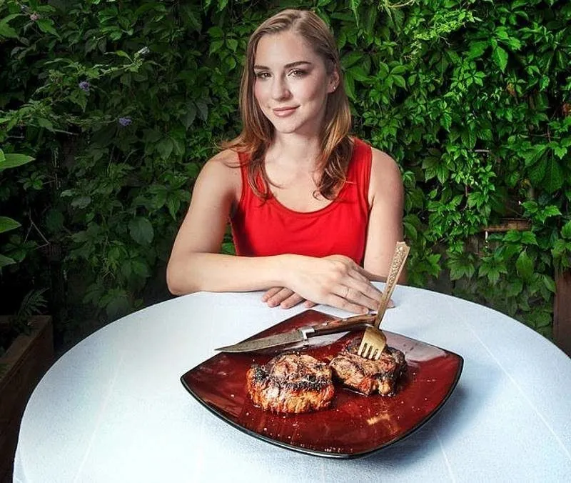
Antes y después de personas que adoptaron la dieta carnívora.
Fuente de las imágenes: meatrx.com/library/transformations
Desde el Homo habilis, pasando por el Homo erectus y Homo neanderthalensis, hasta el Homo sapiens
¿Por qué?
La Teoría del Forrajeo Óptimo ilustra nuestra preferencia por alimentos que generen el mayor retorno posible en términos de calorías.
El alimento más denso nutricionalmente y con más calorías es la carne, completa en vitaminas, minerales, ácidos grasos y aminoácidos esenciales.
99%
de las plantas no son comestibles
y solo están disponibles por temporadas
100%
de los animales son comestibles
y están disponibles durante todo el año
Volumen cerebral aproximado (cm³) a lo largo de la evolución humana
| Especie | Hace (millones de años) | Volumen cerebral |
|---|---|---|
| Simio antropoide | ≈ 9,5 | ≈ 390 cm³ |
| Australopithecus | ≈ 3,9 | ≈ 465 cm³ |
| Homo habilis | ≈ 1,7 | ≈ 570 cm³ |
| Homo erectus | ≈ 0,7 | ≈ 900 cm³ |
| Homo sapiens | hoy | ≈ 1400–1500 cm³ |
Valores aproximados, leídos del gráfico de la presentación.
| Dieta a base de carne | Dieta a base de plantas |
|---|---|
| Fácil para el intestino | Esfuerzo intestinal |
| Muy saciante | Siempre con ganas de más comida |
| Nutrientes fácilmente disponibles | Menos biodisponible |
| Poca o ninguna toxina | Llena de toxinas vegetales |
La misma proteína, cantidades muy distintas
Brócoli
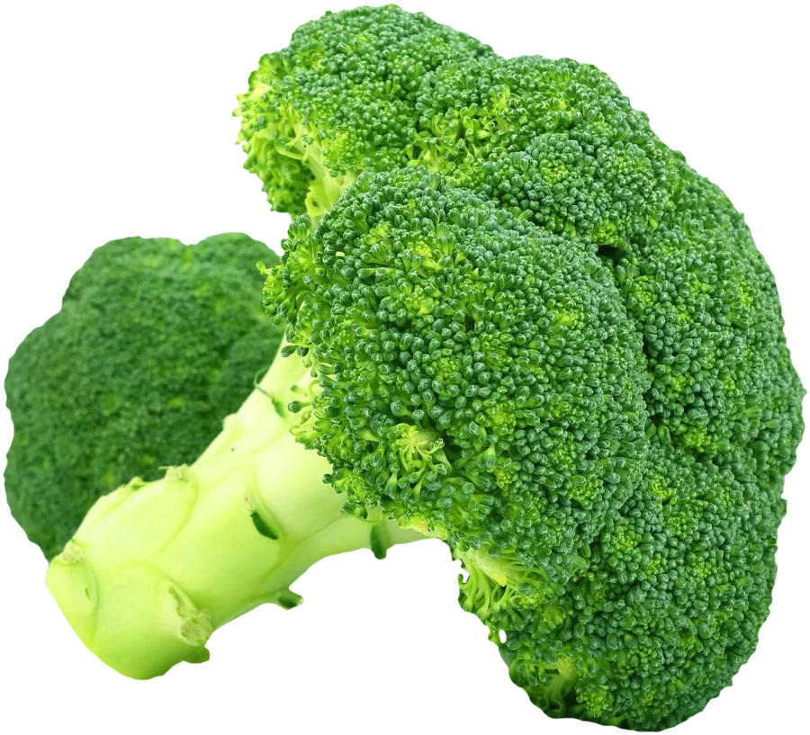
1,4 kg
Aguja de res
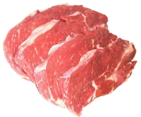
180 g
Aminoácido importante para el mantenimiento de la masa muscular
Espinaca
+10 g de oxalato
900 g
Bistec
80 g
Enfocándonos en los grupos alimentarios equivocados.
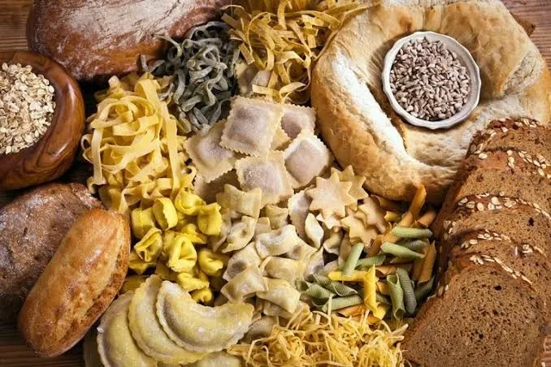
como panes, pastas y granos
120 glo que necesita el cerebro
200 glo que puede fabricar el hígado
El hígado es capaz de fabricar 200 g de glucosa al día, más que los 120 g que el cerebro necesita, mediante la gluconeogénesis.
Cuando pasamos a utilizar la grasa como fuente de energía, producimos cuerpos cetónicos, el combustible preferido de las neuronas.
Muchos estudios comparan a quienes consumen más carne con quienes consumen poca o ninguna carne. Estas comparaciones en estudios observacionales están llenas de factores de confusión, no suficientemente resueltos por los análisis estadísticos de estos trabajos.
Sirven para plantear hipótesis, pero no establecen causa y efecto; establecen una correlación.
Cuando los estudios epidemiológicos u observacionales implican a la carne roja en el origen de enfermedades, comparan, dentro de un universo de miles de personas que responden cuestionarios, a los que comen menos carne roja versus los que comen más.
¿Será que estos grupos son diferentes en otras cosas, además del tipo de carne que comen?
Quien sigue al pie de la letra los consejos de salud, como comer menos carne roja, suele cuidarse también en todo lo demás. Por eso, en un estudio observacional, la carne termina cargando con la culpa de otros hábitos.
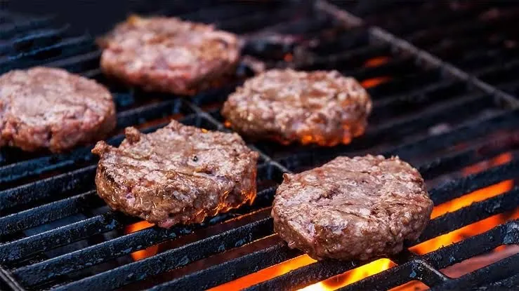
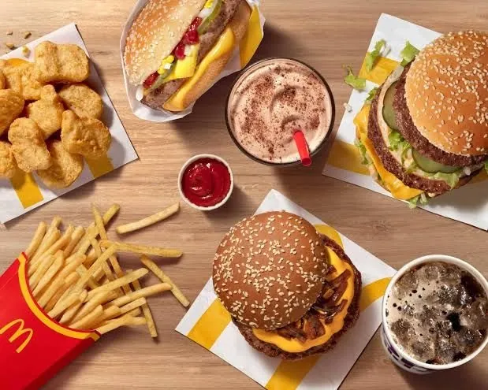
Sí, y ya fue probado
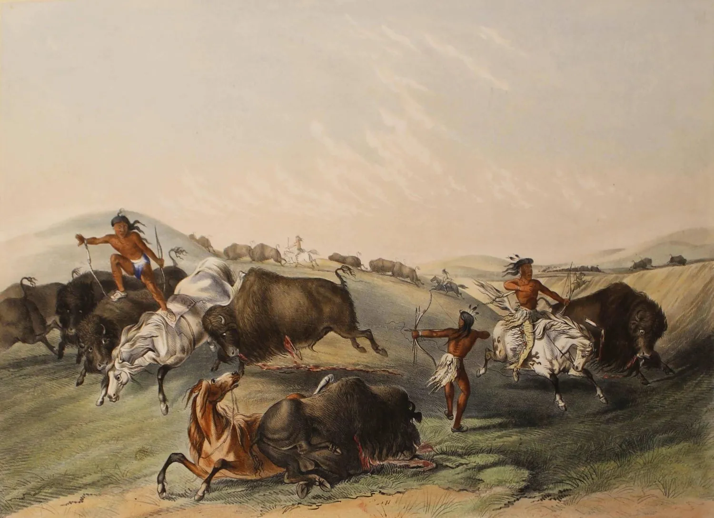
durante siglos
Atlas
Toca un punto del mapa para ir a su historia.
Miembros de la nación indígena esquimal que habitan el Ártico de Canadá, Alaska y Groenlandia. Se alimentaban de carne de focas, renos, aves, morsas, osos, peces y ballenas.
Es sorprendente ver lo bien que les va con una dieta con alto contenido de grasa y proteína. La dieta tradicional esquimal está prácticamente libre de vegetales, productos agrícolas o lácteos, y es bastante baja en carbohidratos.
No desarrollaron escorbuto ni enfermedades derivadas de una deficiencia de vitamina C y demostraron que la actual teoría nutricional de una «dieta equilibrada» es un absurdo.
Conocidos como algunas de las personas más altas del mundo y de buen físico, los indios nativos americanos cazaban grandes animales como bisontes, venados, búfalos, carneros salvajes, cabras, antílopes, alces, caribúes y osos.
Las tribus masái son grupos seminómadas que viven principalmente en Tanzania y Kenia. Su vida gira en torno al ganado, la base de su dieta: carne, leche y sangre.
En la década de los 60, el médico George V. Mann los estudió en Kenia. Comían solo carne, sangre y leche, y notó que consideraban las frutas y hortalizas como alimento para vacas.
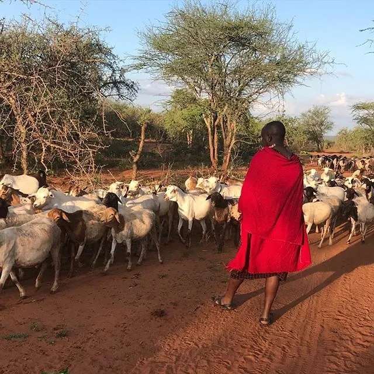
Dentista e investigador
Fue dentista y uno de los mayores contribuyentes a lo que sabemos hoy sobre la influencia de la alimentación en nuestra salud física y mental.
Durante años buscó pueblos que vivían alejados de la civilización, pero que vivían con plena salud.
Estudió más de 14 culturas alrededor del mundo, pasando por África, América, Europa y el Pacífico.
+14culturas estudiadas
4regiones: África, América, Europa y el Pacífico
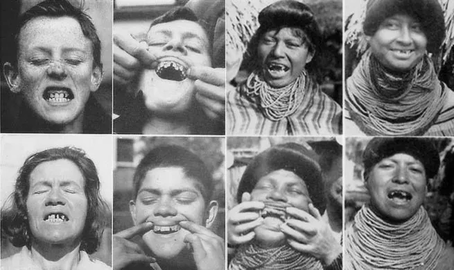
Explorador y etnólogo del Ártico americano, de origen islandés
Exploró el Ártico y, en lugar de llevar grandes reservas de comida, comió lo que comían los inuit: pescado, morsa y otras carnes.
Esto fue a principios del siglo XX, cuando los expertos en nutrición recomendaban vegetales crudos y un consumo mínimo de carne.
Stefansson documentó la dieta inuit, pero encontró escepticismo entre quienes no le creían.
1928 · Hospital Bellevue, Nueva York
Stefansson no intentaba quemar grasa, sino demostrar la viabilidad de la dieta rica en carne de los inuit.
Para demostrárselo, Stefansson y un amigo explorador siguieron una dieta exclusivamente de carne en 1928, durante un año entero. Comenzaron el experimento en un hospital donde los médicos podían monitorear su salud.
Los médicos que examinaron a los dos hombres durante el estudio de un año informaron que ninguno de ellos presentó problemas siguiendo una dieta carnívora.
«No hubo problemas de deficiencia; los dos hombres se mantuvieron perfectamente sanos; sus intestinos siguieron normales; sus heces eran más pequeñas y no olían.»
1929
Journal of Biological Chemistry 83(3):747–752
doi:10.1016/S0021-9258(18)77101-9Capítulo 08
Si pudiéramos crear el mejor multivitamínico para un ser humano, sería un animal.
De 12 a 24 veces más biodisponible en alimentos de origen animal (vitamina A vs. carotenoides).
2 kg de zanahoria = 85 g de hígado
Los alimentos de origen animal son fuentes superiores.
Es calmante. No se encuentra en alimentos de origen vegetal.
Los alimentos de origen vegetal son fuentes superiores.
Necesaria para la serotonina. No se encuentra en alimentos de origen vegetal.
Más baja en alimentos de origen animal, aunque algunos (como salmón, bacalao y huevo cocido) contienen esta vitamina.
Promueve la salud del cerebro. No se encuentra en alimentos de origen vegetal.
El hierro hemo es al menos tres veces más biodisponible que el hierro no hemo (de origen vegetal). Muchos componentes de las plantas interfieren en la absorción del hierro no hemo.
Algunas plantas contienen componentes que interfieren en la absorción del calcio.
Algunas plantas contienen bociógenos que interfieren en la utilización del yodo.
Los alimentos de origen animal son fuentes superiores. Algunas plantas contienen componentes que interfieren en la absorción del zinc.
Un compuesto que solo podemos encontrar en alimentos de origen animal, como carne roja, pollo y pescado.
Los alimentos de origen animal son fuentes superiores de carnitina y colina.
2012
Conclusión: el estreñimiento idiopático y sus síntomas asociados pueden reducirse eficazmente suspendiendo o incluso disminuyendo la ingesta de fibra alimentaria.
World Journal of Gastroenterology 18(33):4593–4596
doi:10.3748/wjg.v18.i33.4593Porcentaje de pacientes con cada síntoma, según la cantidad de fibra en la dieta
| Síntoma | Dieta inicial | Alta en fibra | Reducida en fibra | Sin fibra |
|---|---|---|---|---|
| Estreñimiento | 100% | 100% | 75% | 0% |
| Esfuerzo al evacuar | 100% | 100% | 56% | 0% |
| Hinchazón | 52% | 100% | 31% | 0% |
| Sangrado anal | 49% | 67% | 25% | 0% |
| Dolor | 20% | 50% | 13% | 0% |
Fuente: Dr. Paul Mason, a partir de Ho et al. (2012). Valores leídos del gráfico de la presentación.
2010
No hay evidencia significativa para concluir que la grasa saturada esté asociada a un mayor riesgo de enfermedades coronarias o cardiovasculares.
The American Journal of Clinical Nutrition 91(3):535–546
doi:10.3945/ajcn.2009.277251953
Yudkin defendía que la grasa saturada está muy ligada a nuestra evolución: es abundante, por ejemplo, en la leche materna.
Para él, era más probable que enfermáramos no por la sustancia prehistórica, sino por la innovación reciente: el azúcar.
1930
Las pruebas de función renal no revelaron evidencia de daño renal.
Journal of Biological Chemistry 87(3):651–668
doi:10.1016/S0021-9258(18)76842-72018
Una revisión sistemática de 28 ensayos clínicos aleatorizados no mostró ninguna diferencia en la tasa de filtración glomerular entre quienes siguieron una dieta hiperproteica (más de 1,5 g/kg/día) en comparación con una normo o hipoproteica.
The Journal of Nutrition 148(11):1760–1775
doi:10.1093/jn/nxy1971964
A pesar de una larga y continua dieta exclusivamente de carne y leche, los hombres tienen niveles bajos de colesterol sérico y ninguna evidencia de enfermedad cardíaca aterosclerótica. Esto favorece la conclusión de que la grasa de la dieta no es responsable de la enfermedad coronaria.
Journal of Atherosclerosis Research 4(4):289–312
doi:10.1016/S0368-1319(64)80041-7Contenido con fines educativos e informativos, que reproduce las ideas de la autora. No sustituye la orientación de un profesional de la salud: antes de hacer cambios importantes en tu alimentación, consulta a uno.